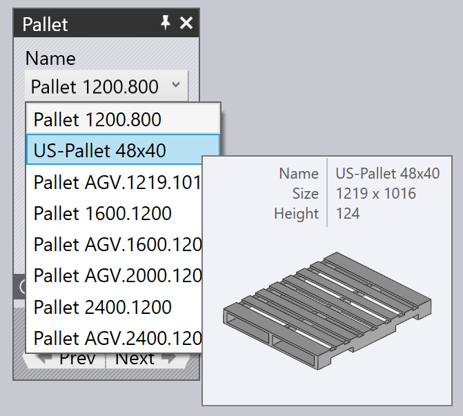

Odoberanie z palety
Ak sa používa prísavkové alebo magnetické chápadlo, prístrihy (rozviny) sú odoberané z palety. Tento proces ovplyvňujú nasledujúce parametre:
-
Poloha palety v kabíne stroja.
-
Poloha a orientácia stohu dielcov na palete.
-
Poloha a orientácia prísavkového chápadla na dielci.
-
Nastavenie prísaviek chápadla (ktoré prísavky sú sú zapnuté/vypnuté, a aký typ prísaviek je namontovaný na každej objímke).
-
Časti dielca, ktoré sú zobrazené kamerou na robote a sú použité ako referencie na kalibrovanie polohy dielca.
Nižšie sú zobrazené okná používané na úpravu všetkých týchto nastavení - všetky sú prepojené navigačnými odkazmi nahor/nadol, ktoré vedú k ďalším oknám v logickej postupnosti:

Ako je zobrazené na obrázku vyššie, k týmto oknám je ľahký prístup aj jednoduchým kliknutím na rôzne objekty v simulácii:
-
Kliknite na paletu, ak chcete otvoriť okno Pallet (Paleta).
-
Pre úpravu stohu dielov na palete (okno Pickup (Uchopiť), kliknite na prístrihy uložené na palete.
-
Pre úpravu polohy chápadla na prístrihu (okno Gripper (Chápadlo)), kliknite na chápadlo.
-
Pre úpravu nastavenia prísaviek chápadla (okno Suction (Prisávanie), kliknite na jednu z prísaviek.
-
Pre úpravu polôh zobrazovania (používané systémom na presné rozpoznanie polohy), kliknite na kameru.
Okno paliet
Okno Pallet (Paleta) sa používa na voľbu palety a na jej umiestnenie v kabíne. Toto okno je možné otvoriť jednoduchým kliknutím na paletu; Flux tiež nastaví časovú os simulácie tak, aby bol robot v polohe, v ktorej odoberie dielec z palety.

-
Inú paletu je možné zvoliť v zozname Názov (Názov). Za normálnych okolností sú uvedené iba palety, ktoré je možné použiť pre tento prístrih, je možné ale vypnúť Filtrované (Filter), následne sa zobrazia všetky dostupné palety.
-
Pri pohybe myšou po názvoch v zozname sa zobrazí krátky popis danej palety, spolu s jej miniatúrnym zobrazením:
 -
Pomocou parametra Poloha (Poloha) sa nastaví poloha palety v smere osi Z a X (v súradniciach kabíny), pomocou Uhol (Uhol) je možné otočiť paletu. Keď posúvate alebo otáčate paletu, stoh dielcov na palete a chápadlo/robot nasledujú tento pohyb.
-
Pomocou tlačidiel Ďalej (Ďalší) a Späť (Predošlý) je možné sa prepínať na ostatné palety v kabíne; napríklad na paletu s krokmi na ukladanie dielcov.
-
Pomocou navigačného tlačidla Snímanie (Odobrať) je možná úprava polohy stohu dielcov na palete.
-
Pomocou tlačidla Konfig. Pamäť (Uložiť nastavenie) pod oknom Rozšírené (Rozšírené) je možné uložiť toto nastavenie kabíny (vrátane všetkých paliet) ako predvolené pre tento stroj.
Okno uchopovania
Okno Pickup (Uchopiť) sa používa na úpravu polohy stohu dielcov na palete. Toto okno je možné otvoriť priamo kliknutím na stoh prístrihov uložených na palete. (Prístup k nemu je možné získať aj použitím odkazu Snímanie (Odobrať) v okne paliet).
-
Pomocou parametra Poloha (Poloha) sa nastaví poloha stohu na palete; tieto súradnice špecifikujú stred dielca v smere osi Z a X, vzhľadom na roh palety, nachádzajú sa v lokálnom súradnicovom systéme palety.
-
Pomocou parametra Uhol (Uhol) sa nastaví otočenie dielca na palete.
-
Na prevrátenie dielca použite prepínač Otočiť dielec (Prevrátiť dielec). Pozor, väčšinou to znamená, že skôr, ako bude možné vykonať prvý ohyb, bude potrebný dodatočný proces prechytenia (TecZone Bend ho pridá automaticky).
-
Pomocou odkazu Kamera… (Kamera) je možné prejsť do okna Camera (Camera), kde je možné nastaviť rozlíšenie obrazu vo fáze uchopovania.
-
Kliknutím na Vzťažné body… (Body na dráhe) sa otvorí editor Waypoints (Body na dráhe), kde je možné presne nastaviť dráhu robota počas uchopovania.
-
Kliknutím na Prechyt. stan. (Prechyt. stanice) sa otvorí okno Regrip Station (Prechytávacia stanica), kde je možné nastaviť polohu prechytávacej stanice počas uchopovania.
Pri pohybe dielca po palete ostáva chápadlo "spojené" s dielcom a robot sleduje pohyby.
Okno chápadla
Okno Gripper (Chápadlo) sa používa na voľbu rôznych chápadiel, alebo na zmenu polohy a orientácie, v ktorej chápadlo uchopí dielec.

-
Iné chápadlo je možné zvoliť v zozname Názov (Názov). Za normálnych okolností sa zobrazia iba tie chápadlá, ktoré sú vhodné pre tento dielec (na základe veľkosti a nosnosti chápadla), je možné ale vypnúť Filtrované (Filter), následne sa zobrazia všetky chápadlá.
-
Pri pohybe myšou po názvoch v zozname chápadiel sa zobrazí krátky popis daného chápadla, spolu s jeho miniatúrnym zobrazením:

-
Pomocou parametra Poloha (Pozícia) je možné posunúť stred chápadla voči stredu dielca, pomocou parametra Uhol (Uhol) je možné otočiť chápadlo vzhľadom na orientáciu dielca.
-
Kliknutím na odkaz Prísavka (Prisávanie) je možné prejsť na detailnú úpravu chápadla (výber rôznych prísaviek, zapínanie / vypínanie prísaviek).
-
Tlačidlo Zvoliť uchopovaciu plochu (Nastaviť plochu uchopovania) je možné použiť na umiestnenie chápadla na inú plochu. Za normálnych okolností sa na umiestnenie chápadla použije najväčšia plocha na modeli. Ak je potrebná zmena, kliknite na toto tlačidlo. Následne kliknite na plochu, na ktorú sa má umiestniť chápadlo:

-
Tlačidlo Použiť kliešťové chápadlo (Použiť kliešťové chápadlo) sa používa na prepnutie tohoto dielca pre zásobník dielcov a kliešťové (mechanické) chápadlo. Všetky fázy cyklu ohýbania od uchopenia prístrihu až po uloženie dielca sa prepočítajú s použitím kliešťového chápadla gripper[1].
Výstrahy prisávania
Ak sa chápadlo posunie tak, že niektoré prísavky sú mimo plechu alebo sú nad otvormi v dielci, prísavky sa zvýraznia a v stĺpci Pickup (Uchopenie) v navigátore sa zobrazí chyba, ako je to vidno na obrázku nižšie:

Menu akcií

Tlačidlo Actions (Akcie) sa používa na otvorenie menu, ktoré poskytuje niekoľko užitočných akcií na chápadle:
-
Automatické prepnutie (Auto umiestnenie: Posunutie): Pokúša sa premiestniť chápadlo nad dielec a zabezpečiť, aby boli všetky prísavky vnútri dielca a zároveň aby neboli nad otvormi (ak to je možné).
-
Odpojenie netesných prísaviek (Vypnúť prísavky s netesnosťou): Vypne všetky prísavky ktoré sú nad otvormi, alebo sú mimo okrajov dielca part[2].
-
Pripojenie všetkých prísaviek (Zapni všetky prísavky): Zapne všetky prísavky, ktoré sú vypnuté.
-
Konfig. Pamäť (Uložiť nastavenie): Ak nastavujete chápadlo otáčaním alebo odstránením niektorých prísaviek, alebo zmenou dĺžky alebo uhla ramena (pri multi chápadlách, ktoré môžu meniť tvar), je možné uložiť zmenené nastavenie chápadla pod novým názvom, aby ste ho mohli jednoducho opäť použiť.
-
Exportovanie chápadiel (Exportovať chápadlo): Uloží aktuálne chápadlo ako súbor .fxbgrip, ktorý je možné naimportovať do inej inštalácie TecZone Bend-u. Je to užitočné, ak ste si naimportovali vlastné chápadlo a potrebujete ho zdieľať s inými inštaláciami softvéru.
Okno prísaviek
Okno Suction (Prisávanie) sa používa na nastavenie rozloženia prísaviek na chápadle. Toto okno je možné otvoriť kliknutím priamo na prísavku, alebo kliknutím na odkaz Suction (Prisávanie) v okne chápadla.

-
Konkrétnu prísavku v chápadle je možné zvoliť kliknutím na Prísavka # (Prísavka č.), alebo použite tlačidlá Ďalej (Ďalšie) a Späť (Predošlé) na prepínanie medzi prísavkami. Zvolená prísavka je zvýraznená modrou farbou a môže byť upravovaná.
-
Pre každú prísavku je možné nastaviť Stav (Stav) na On (zap), Off (vyp) alebo Removed (odstránená). Viac informácií k tomu je uvedených v popise nižšie.
-
Pomocou okna Typ (Typ) je možné zmeniť typ rôznych prísaviek. Zvyčajne sa jednou zmenou zmenia všetky prísavky v chápadle na nový typ, no takisto je možné kombinovať prísavky vypnutím tlačidla Zmeniť všetko (Zmeniť všetky) a následnou zmenou prísaviek. (Pozor, ak to takto urobíte, voľba prísaviek bude obmedzená, pretože všetky prísavky namontované na ráme chápadla musia mať rovnakú pracovnú výšku). Na obrázku sú zobrazené dve z prísaviek nahradené menšími (SAXM50, namiesto predvolenej SAXM80).
-
Pomocou tlačidla Reset (Reset) je možné obnoviť pôvodný stav chápadla - všetky prísavky sú zapnuté a sú zresetované späť na predvolený typ prísaviek, ktoré sú zadefinované v chápadle.
Predvolený stav prísavky je On (zap), čo znamená, že k prísavke je pripojené vákuum (odsávanie) a pomáha pri nadvihovaní dielcov.
Ak sa prísavka nachádza nad otvorom v dielci, môžete zmeniť jej stav na Off (vyp), čo znamená "žiadne vákuum". (Tým sa zníži zdvih chápadla a zmení sa stred zdvíhania, čo Flux zohľadňuje pri kontrole kapacity chápadla). Prísavka je stále namontovaná na ráme a podieľa sa na kontrole kolízie. Flux zobrazuje vypnuté prísavky ako drôtené modely, tak ako vidíte na dvoch z prísaviek na obrázku vyššie.
Okrem toho je možné nastaviť prísavku ako Removed (Odstránená), čo znamená, že prísavka bola odmontovaná z rámu aktuálneho stroja. Táto prísavka nedvíha dielec a takisto nespôsobí kolíziu. Niekedy to je potrebné, ak prísavka spadne cez tvarovanú oblasť dielca alebo spôsobí kolíziu so spodným nástrojom alebo stolom stroja počas prevádzky.
Okno kamery
Proces uchopovania dielcov si vyžaduje, aby kamera zaznamenala jeden alebo viac obrázkov, systém spracovania obrazu potom tieto obrázky využije na presné určenie polohy dielca na palete. Kliknutím na kameru namontovanú na robot, alebo zvolením navigačného tlačidla Camera (Kamera) v okne Pickup (Uchopiť) sa otvorí okno kamery. Flux takisto umiestní simuláciu tak, aby bol robot v polohe potrebnej na zachytenie obrázka:
-
Pomocou zoznamu Index (Index) (alebo tlačidiel Ďalej (Ďalší) a Späť (Predošlý)) je možné prepínať medzi obrázkami presného rozpoznávania tohoto dielca. Flux pritom zobrazí oranžový obrys, ktorý znázorňuje zónu rozpoznávania obrazu ba dielci (pozri obrázok vyššie).
-
Pomocou parametra Poloha (Pozícia) je možné premiestniť túto zónu v smere osi Z a X, aby lepšie zaznamenávala niektoré prvky na dielci, ktoré môžu vylepšiť presnosť rozpoznávania (rohy, malé otvory, zárezy).
-
Pomocou tlačidla Pridať (Pridať) je možné pridať ďalší obrázok rozpoznávania (až 4), pomocou tlačidla Odstrániť (Odstrániť) je možné odstrániť aktuálny obrázok rozpoznávania. Počas simulácie uchopovania dielca zobrazuje Flux pohyb robota s kamerou nadol do každej z týchto oblastí rozpoznávania, následne sa zastaví, aby zaznamenala obraz.
Ak je zapnutý prepínač Použiť presvetľovací stôl (Použiť podsvietený stôl), dielec sa pred použitím kamery pre záznam obrazu presunie na podsvietený stôl. Zvýši sa tým kontrast, čo je potrebné pri dielcoch odrážajúcich svetlo. TecZone Bend pridá podsvietený stôl a automaticky ho umiestní blízko odoberacej palety, kliknutím na neho máte možnosť zmeniť jeho polohu: